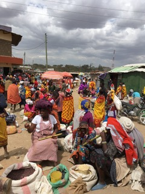
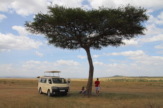
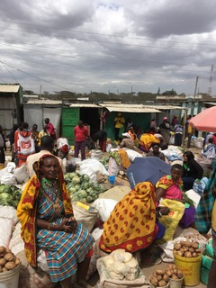
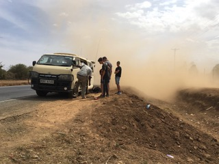
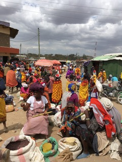
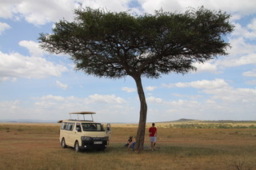
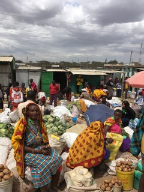
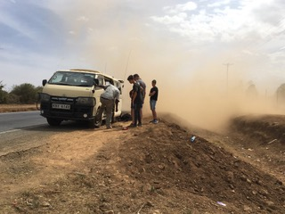

Hello, I'm Max
Volunteer and creative I am committed to the missions I undertake. I love working in teams and I believe that the diversity that comes out of it make the strength of a project.
I am currtly looking for a 6 month internship in Marketing in order to apply my learnings in a professional environment and learn new skills.
This profile is the occasion for you to learn a bit more about me and what motives me in life !
Discover my LinkedinTRAVELS
I love traveling and discovering new environments. For me it's a way to understand better others and think outside the box.
Here are pictures I took of my last travel to Africa. It was my first time in Kenya, what an exeprience !
 







SPORTS
Running is a way for me to relax, clear my head but also challenge myself.
I recently created a profile on Strava, don't hesitate to follow me so we can share together our performances !
My Strava AccountSUSTAINABILITY
Our world is changing and our behaviour toward it should to. I try every day to adopt a better attitude toward our planet and hope to bring people around me to do the same.
Here are people that helped me a lot to change my ways of doing, maybe you will find them intertesing.
FASHION & DESIGN
I am passionate about fashion and design in general. Since I was little I always loved dressing and it is a way, i feel, to express myself and take part of society.
Here are the links to the Instgram of my favourite designers. Go check them out !